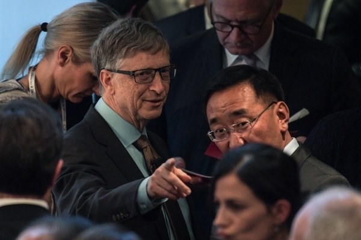

В Госдуме назвали Билла Гейтса ответственным за распространение коронавируса

Миллиардер контролирует выбранную ВОЗ стратегию борьбы с COVID-19, которая приводит к уменьшению населения и падению экономики.
Об этом в интервью радиостанции «Говорит Москва» сказал член комитета Госдумы по бюджету и налогам Евгений Фёдоров.
«ВОЗ получает большие деньги от американских олигархов, в том числе от Билла Гейтса.Он в советской терминологии член политбюро, ответственный за мировую медицину.Он ответственен за формат борьбы с эпидемией либо её создание.Мы помним, что сама стратегия создавалась во взаимодействии с мировыми организациями и самим Гейтсом.Он нам приписал ещё два года болеть.Стратегия от ВОЗ приводит к падению экономики и двухлетней болезни.ВОЗ предлагает маски, социальную дистанцию, QR-коды — ограничение распространения, а Китай просто ввёл жёсткий карантин и прекратил распространение болезни.Стратегия ВОЗ — все должны переболеть, при этом от 3 до 7% умрёт, переболевшие могут ещё раз заболеть».
Фёдоров вспомнил пандемические учения «Событие 201», проведённые в 2019 году в США.В организации участвовал университет Джонса Хопкинса и фонд Билла и Мелинды Гейтс.Тогда моделировался процесс перехода вируса от летучих мышей к человеку.
«Я верю нашему Совету безопасности и Патрушеву, который ещё два года назад сказал, что американцы в 200 лабораториях разрабатывают биологическое оружие в данном случае аналогичное коронавирусу.Я уверен, что сложившаяся эпидемия носит рукотворный характер.Государство, которое придумало «Агент Оранж» [содержит мутаген диоксин, химическое оружие — прим.ГМ], применило его в том же Вьетнаме, спокойно может придумать новые технологии в области биологической войны».
В рамках учений «Событие 201» моделировалась ситуация переноса вируса воздушно-капельным путём, при рукопожатиях и других тактильных контактах.Он должен был быть похож на грипп.Особенностью вируса было отсутствие эффективной вакцины и избирательная смертность населения с низким иммунитетом.При этом прогнозировалось, что мировая экономика рухнет на 11%.
Ранее Билл Гейтс спрогнозировал окончание пандемии в 2022 году.Однако в США она прекратится на год раньше, сказал основатель Microsoft в интервью Fox.
Posted On: 2020-09-21T09:53:00
Content Date: 2020-09-21
Download Date: 2021-05-13
Document ID: L0C04C2YR